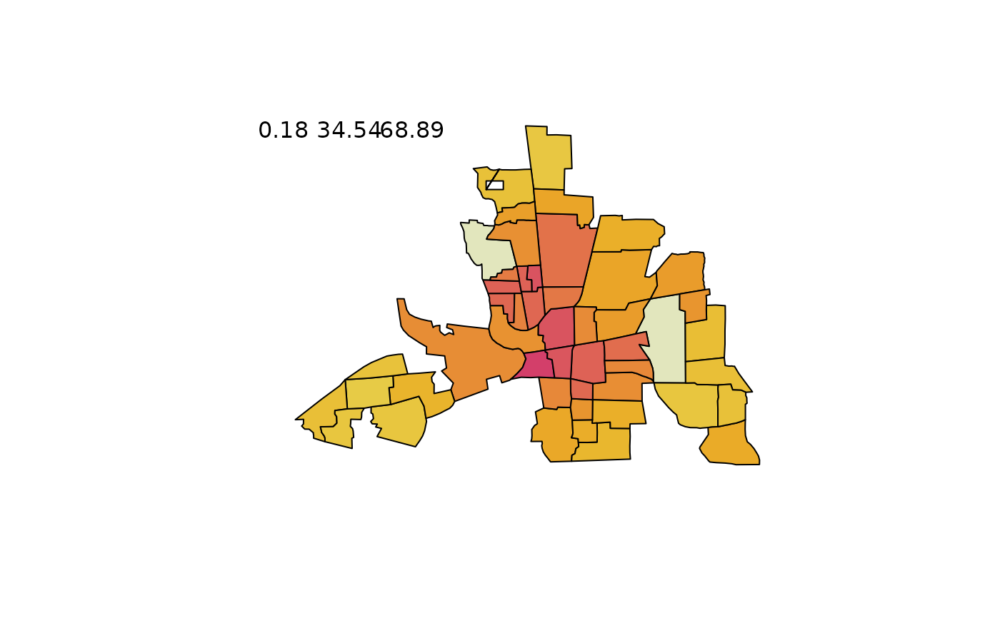
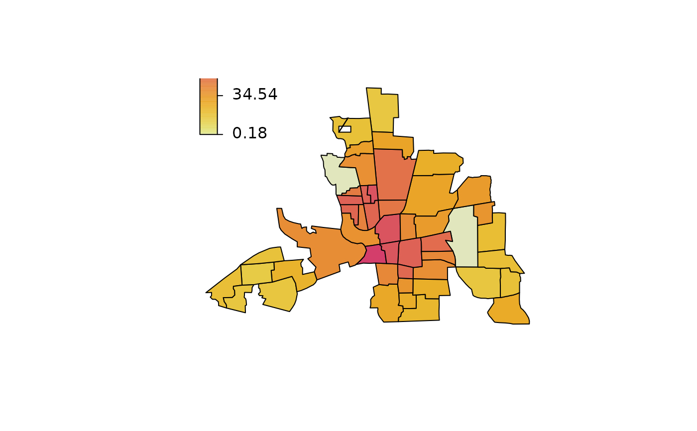
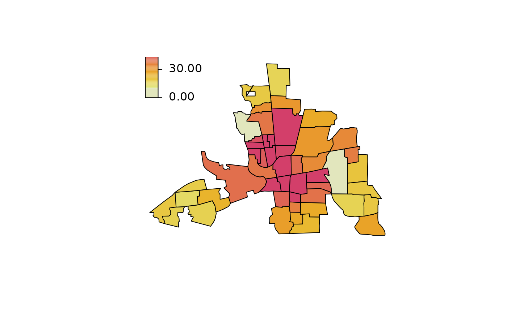

plotmap.RdThe function takes a list polygons and draws the corresponding map. Different
colors for each polygon can be used.
plotmap(map, x = NA, id = NULL, select = NULL,
legend = TRUE, names = FALSE, values = FALSE, ...)The map to be plotted, usually an object that inherits from
SpatialPolygons, but may also be a list of polygons, i.e., each list
entry is a matrix with x- and y-coordinates.
A vector, data.frame or matrix. In the latter case x should have two columns,
one column that is the region identifier and one that contains the values to be plotted.
In case x is a data.frame, the function searches for "character" or
"factor" columns for the region identifier. If x is a matrix, the second
column of x is supposed to be the region identifier. If x = NA and
map is an object of class "SpatialPolygonsDataFrame" only the polygons
will be plotted without using the data.
If argument x is a vector, argument id should contain the region identifier
vector.
Select the column of the data in x which should be used for plotting, may
be an integer or character with the corresponding column name.
Should a color legend be added to the plot, see also function colorlegend.
If set to TRUE the name for each polygon will also be plotted at the centroids
of the corresponding polygons.
If set to TRUE the corresponding values for each polygon will also be plotted
at the centroids of the polygons.
Arguments to be passed to colorlegend and others, e.g. change the
border of the polygons and density (mdensity for missing regions in id),
see polygon.
## Example from mgcv ?mrf.
## Load Columbus Ohio crime data (see ?columbus for details and credits).
data("columb", package = "mgcv")
data("columb.polys", package = "mgcv")
## Plot the map.
plotmap(columb.polys)
## Plot aggregated data.
a <- with(columb, aggregate(crime,
by = list("district" = district), FUN = mean))
plotmap(columb.polys, x = a$x, id = a$district)

plotmap(columb.polys, x = a$x, id = a$district,
pos = "topleft")
plotmap(columb.polys, x = a$x, id = a$district,
pos = "topleft", side.legend = 2)
plotmap(columb.polys, x = a$x, id = a$district,
pos = "topleft", side.legend = 2, side.ticks = 2)

plotmap(columb.polys, x = a$x, id = a$district,
pos = "topleft", side.legend = 2, side.ticks = 2,
col = heat_hcl, swap = TRUE)
plotmap(columb.polys, x = a$x, id = a$district,
pos = "topleft", side.legend = 2, side.ticks = 2,
col = heat_hcl, swap = TRUE, range = c(10, 50))
plotmap(columb.polys, x = a$x, id = a$district,
pos = "topleft", side.legend = 2, side.ticks = 2,
col = heat_hcl(5), swap = TRUE, range = c(10, 50),
lrange = c(0, 60))
